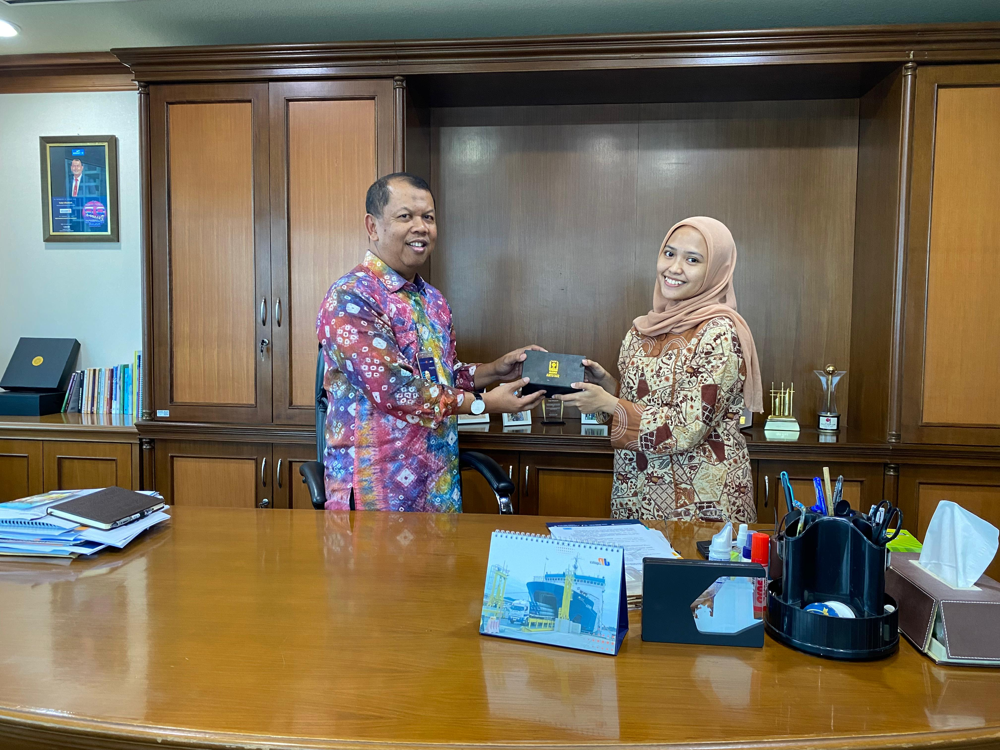
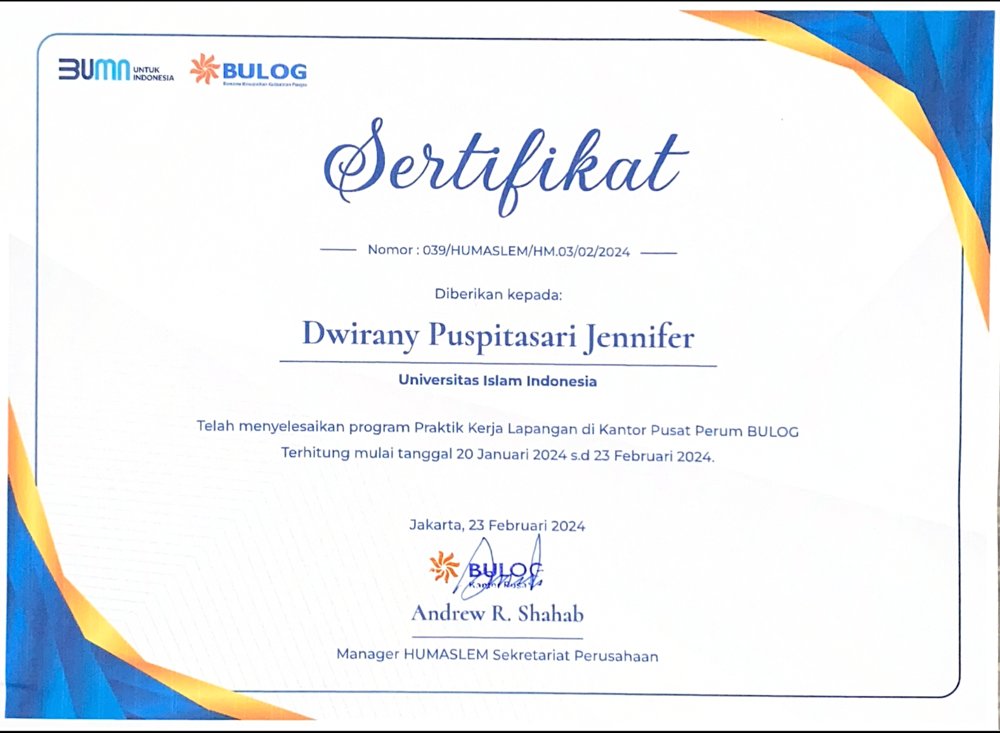
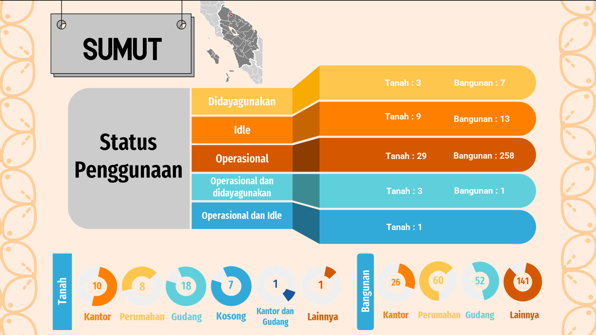
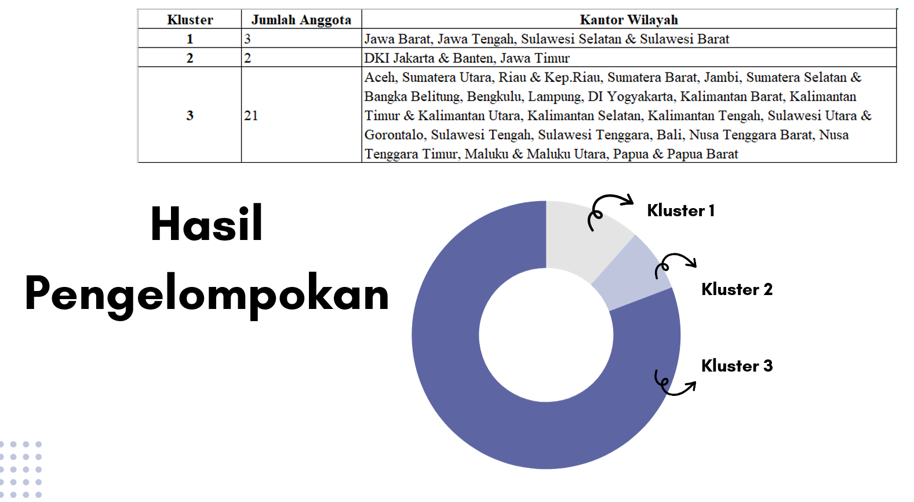

PROFESSIONAL EXPERIENCE
Perum BULOG
Data Analyst Intern supporting operational reporting, commodity monitoring, procurement analysis, and business analytics activities.
COMPANY OVERVIEW
About The Company
Perum BULOG is an Indonesian state-owned enterprise responsible for national food logistics, commodity distribution, and strategic supply chain management across Indonesia.
ROLE & DURATION
Data Analyst Intern
Focused on national-scale asset analytics, warehouse utilisation evaluation, dashboard reporting, and operational data management to support strategic monitoring initiatives.
Duration: January 2025 – February 2025
KEY RESPONSIBILITIES
Asset Data Analytics
Analyzed fixed asset datasets across 38 provinces to support operational monitoring and reporting evaluation.
Dashboard & Spatial Visualization
Developed dashboard reporting and spatial visualizations to improve asset monitoring transparency and reporting clarity.
Data Validation & Database Management
Performed data validation and structured asset database management to ensure reporting accuracy and audit readiness.
TOOLS & TECHNOLOGIES
KEY CONTRIBUTIONS
National Asset Monitoring
Managed and analyzed fixed asset datasets covering 38 provinces across Indonesia for operational monitoring purposes.
Warehouse Utilisation Analysis
Applied clustering analysis to identify warehouse utilisation patterns and support data-driven asset optimisation.
Structured Reporting
Improved reporting transparency through structured databases, dashboard visualization, and data validation processes.
DOCUMENTATION
Work Documentation & Visuals



